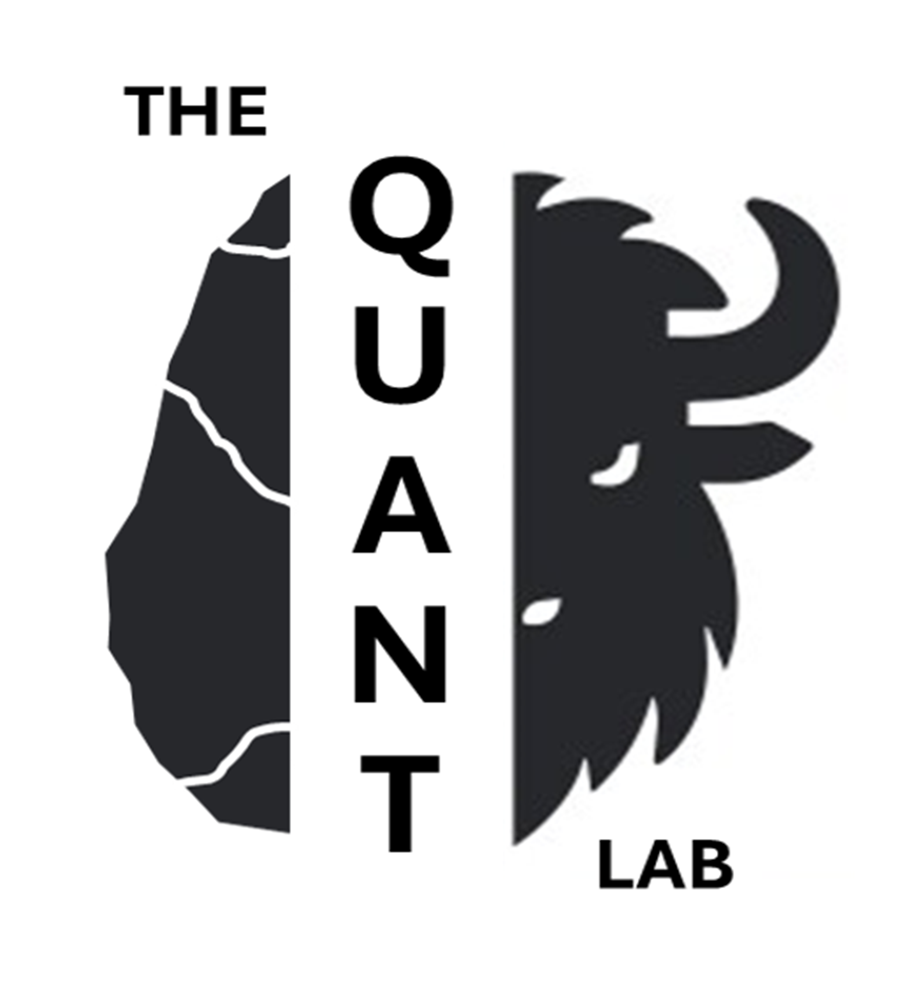
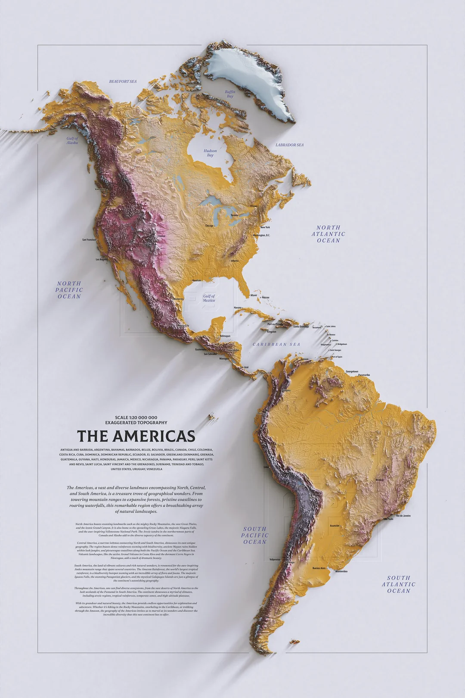
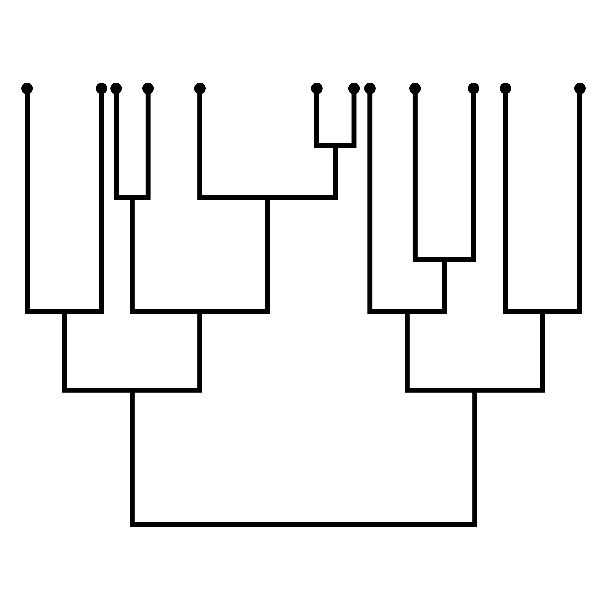
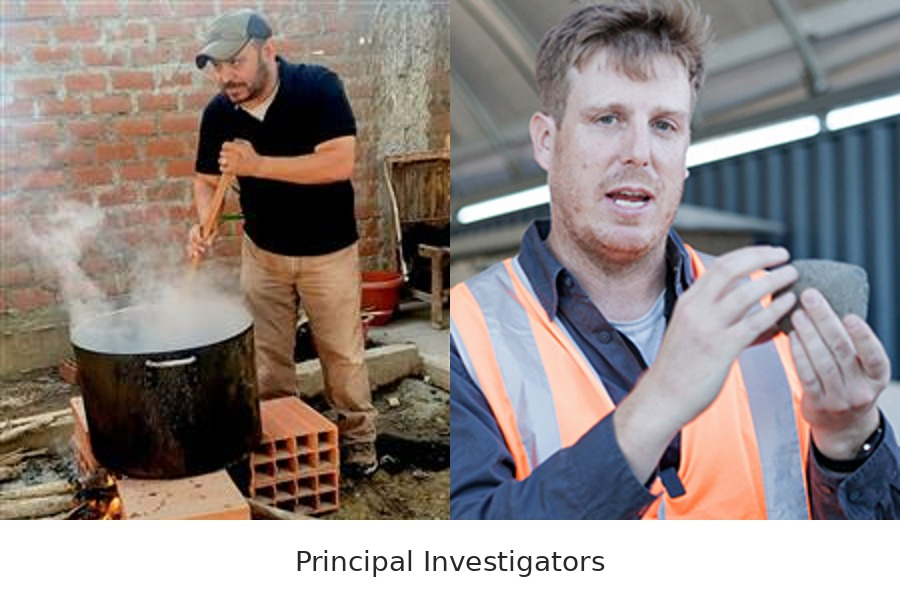

The QUANT Lab @Purdue
δ Data Science AI Experimental Theoretical Fieldwork Morphometrics Evolution Anthropology
Theory, methods, and empirical science working together
The QuantLab at Purdue University studies human evolution, behavior, culture, and ecology through an integrated approach that connects theory, methods, and empirical research.
The lab develops and uses computational tools, including statistical modeling, artificial intelligence, and machine learning, to build predictive theory, test ideas, and generate new insights about people and social change over time.

An integrated laboratory for quantitative anthropology, archaeology, and computational science.
Research Framework
The lab's work is organized around three connected pillars.
Theory Development
The lab builds and refines quantitative and predictive theory in human evolutionary biology, ecology, behavior, cultural evolution, and morphology, developing new frameworks for understanding human adaptation, variation, and change.
Methods Innovation
The lab develops and applies computational statistics, AI, and machine learning to analyze complex anthropological, archaeological, and biological data, making it possible to detect patterns and evaluate competing explanations in new ways.
Empirical Testing
The lab tests models and hypotheses using archaeological, ecological, ethnographic, and evolutionary biological data, combining fieldwork, experiments, and large-scale quantitative analysis to evaluate and refine theoretical predictions.
Projects
01. Americas
Research on Paleoindian technology, faunal transport, bison ecology, evidentiary evaluation, and quantitative archaeology in North and South America.

02. Africa
Research on Early and Middle Stone Age technology, regional connectivity, paleoenvironment, water stress, and hominin evolution and adaptation in the southern Kalahari Basin and east Africa.

03. Australia
Research centers on experimental archaeology, fracture studies, digital heritage, and ethnography through collaborations anchored at UQ and UniSQ.

04. Human Evolution
Projects connecting morphometrics, taphonomy, health, and environmental history to broader questions about human evolution and biocultural change.

05. AI Development
AI development for archaeology and anthropology, including computer vision, model building, scientific inference, and reproducible computational tools.
Publications
Select a publication to see a short summary and follow the link to the paper, chapter, or DOI record.
People
Meet the lab! Principal Investigators, current team members, collaborators, and alumni.

Principal Investigators
Erik Otárola-Castillo and Ben Schoville. Research interests, investigator profiles, and direct links to Purdue and Google Scholar.
Team Members
Current postdoctoral, graduate, and undergraduate researchers active in QuantLab projects and collaborations.
Recent Highlights
Contact
General contact
anthropology [AT] purdue.edu
Prospective students and postdocs
We are currently recruiting undergraduate and graduate students, and postdoctoral researchers.
Department
Purdue Anthropology, Stone Hall
Mailing address
700 Mitch Daniels Blvd., Suite 303
West Lafayette, IN 47907-2059
Main office
(765) 496-7400
Join or collaborate with the lab
The QuantLab welcomes inquiries from prospective graduate students, postdoctoral researchers, undergraduate students, and colleagues interested in research collaboration.
We are especially interested in people working at the intersection of anthropology, archaeology, human evolution, quantitative methods, evolutionary theory, and AI-enabled scientific research.
For general questions, please email anthropology [AT] purdue.edu.
For direct inquiries about joining the lab or discussing research fit, contact Dr. Erik Otárola-Castillo or Dr. Benjamin Schoville.
From the Blog
Selected public writing and short-form essays connected to QuantLab research. Scroll down for link to the full blog page.